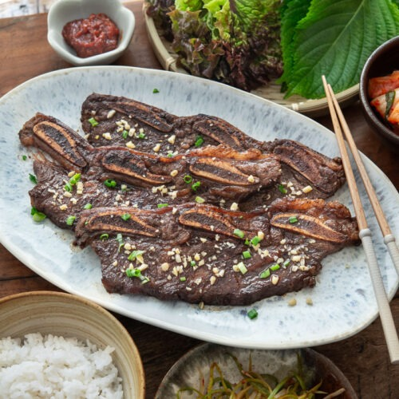

LA Galbi (KBBQ Short Rib)

Description
You can enjoy a delicious Korean barbecue at home. It's all about the
marinade and good quality meat, and it's easy to prepare! Galbi, Korean
beef short ribs, is one of the most popular barbecue dishes in Korean
homes, especially for special occasions and gatherings. Here's my
tried-and-tested recipe for the perfect galbi marinade!
Marinated in a perfectly balanced sweet and savory sauce, the galbi
meat is tender and succulent while still being nicely browned and caramelized
on the outside.
Ingredients
Dish
- 3 - 4 pounds cross-cut beef short ribs (flaken or LA galbi cut) about ⅓ - inch thick
- 3 scallions, cut into 2-inch pieces
- 2 cups white rice
Marinade
- 1/2 Korean/Asian pear (or 1 apple), grated (see note 1 for substitutes) You can blend the pear (or apple) together with the next 3 ingredients in a mini/regular blender.
- 2 tablespoons minced garlic (about 6 plump cloves)
- 1/2 medium onion, grated
- 1 teaspoon minced ginger (about 1 inch chunk)
- 1/2 cup soy sauce
- 1/2 cup water
- 3 or 4 tablespoons sugar You can reduce sugar and add more pear or maesilcheong (Korean plum syrup) to taste
- 2 tablespoons honey
- 1/4 cup cooking rice wine (Korean matsul mirim or mirin)
- 2 tablespoons sesame oil
- 3 scallions finely chopped
- ½ teaspoon black pepper
- 1 teaspoon sesame seeds
Steps
- Rinse the ribs to wash off bone dust and remove some blood on the surface. See note 2. Drain well. Pound the meat lightly with a meat tenderizer, or stretch it out with your hands. This second part helps tenderize the meat, but you can skip it if you want.
- Blend the pear (or apple) together with the onion, garlic, and ginger in a mini/regular blender. Mix all the marinade ingredients well in a large bowl or container.
- Add the meat to the marinade and coat each rib with the marinade. Marinate the meat for 6-8 hours (overnight for best results). Flip them over half way through. The thicker the meat, the longer you’ll want to marinate.
-
- Grilling: Preheat the grill over medium-high heat. Grill the short ribs, turning only once, 2-3 minutes on each side. You can use charcoal or wood charcoal (soot bul) grill, gas grill or a grill pan over the stove top.
- Broiling in the oven: Set the oven to broil and preheat. Lay the meat in a single layer on a broiling pan and place it on the top rack of the oven, usually about 6 inches below the broiler. Cook until the ribs are slightly charred and caramelized, 5 to 6 minutes. Flip them over and cook for an additional 3 or 4 minutes. Watch closely not to burn them.
- Pan-frying: Preheat a large non-stick pan. Reduce the heat to medium. Lay the short ribs in a single layer, 4 or 5 ribs depending on the size of the pan. Cook for 4 to 5 minutes. When the pan is getting dry. Add the marinade through a strainer. Flip them over and cook for another 4 to 5 minutes until all the sauce is gone and the ribs are nicely browned.